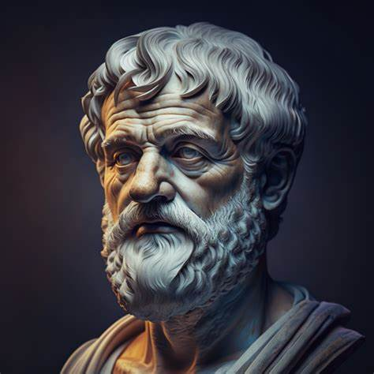

Aristoteles
Aristóteles fue un filósofo, polímata y científico griego que nació en la ciudad de Estagira, al norte de la Antigua Grecia, en el año 384 a.C. Es considerado junto a Platón, el padre de la filosofía occidental. Sus ideas han ejercido una enorme influencia sobre la historia intelectual de Occidente por más de dos milenios. Fue discípulo de Platón y tuvo un profundo impacto en el pensamiento occidental. Sus contribuciones a la filosofía abarcan desde la lógica y la ética hasta la política y la ciencia.Aristóteles nació en el año 384 a.C. en Estagira, una antigua ciudad de Macedonia. De su población natal deriva el apodo con el que se lo conoció: el estagirita. Fue el hijo menor de Festias y de Nicómaco, el médico personal de los reyes de Macedonia Amintas III y Filipo II. Desde pequeño su padre le enseñó los secretos de la medicina, y de ahí provino su afición a la investigación experimental. Luego de la muerte de su padre y de su madre, fue adoptado por Proxeno de Atarneo, que se había casado con Arimnesta, la hermana mayor de Aristóteles.
Con 17 años, tras quedar huérfano, su tutor Proxeno de Atarneo lo envió a Atenas a estudiar en la Academia de Platón, donde desarrolló y consolidó su pensamiento filosófico. Permaneció en la Academia durante aproximadamente 20 años hasta la muerte de su maestro. Tras la muerte de Platón, Aristóteles esperaba hacerse cargo de la dirección de la Academia, pero fue Espeusipo, sobrino de Platón, quien asumió la dirección de la Escuela. Ante esta situación, el filósofo de Estagira abandonó Atenas y se instaló en Aso, donde fundó su propia escuela.

Su filosofia
La filosofía de Aristóteles se centraba en la idea de un ser único, eterno e inmutable. Propuso que el principio de todas las cosas era lo que llamó el ápeiron, una sustancia infinita e indeterminada que no podía ser percibida por los sentidos humanos. Según Aristóteles, el entorno sensible que percibimos a través de nuestros sentidos es solo una copia imperfecta del entorno de las Ideas. Las Ideas son realidades eternas e inmutables que existen en un plano superior de realidad. Aristóteles argumentaba que solo a través de la razón y la contemplación de las Ideas podemos acceder al verdadero conocimiento.Frente al idealismo de su maestro Platón, Aristóteles es realista: no existen dos mundos separados, uno sensible y otro inteligible, sino un único mundo, formado por objetos individuales: las sustancias. Cualquier sustancia es un compuesto hilemórfico; es decir, un combinado de materia (el principio indeterminado) y forma (la esencia de la sustancia, que determina que sea lo que es). Esta teoría también la aplicará Aristóteles a la antropología, sosteniendo que todo cuerpo está constituido por materia y forma, que componen un todo único.
Como impacta nuestra vida
El legado filosófico de Aristóteles es vasto y relevante en la actualidad. Su enfoque en la ética, la política y el pensamiento lógico y científico ha dejado una huella perdurable en la filosofía occidental. Su pensamiento sigue siendo una fuente de inspiración y su influencia continúa en el presente. Sus ideas siguen siendo relevantes en la actualidad y han influido en la metodología científica y en nuestras concepciones de la moral y el gobierno. Aristóteles es considerado uno de los filósofos más influyentes de la historia y su legado perdura en el pensamiento humano.